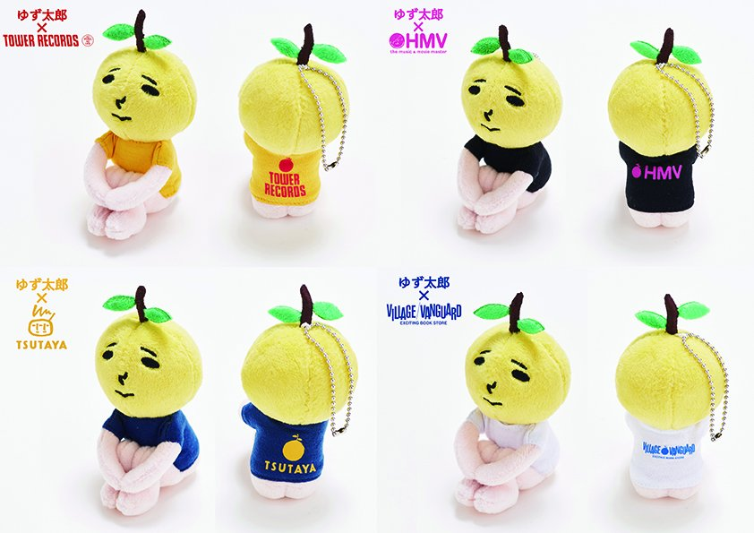

ゆずの紹介
北川 悠仁 (Yujin Kitagawa)
ボーカル、アコースティックギター、タンバリン担当。ゆずの楽曲のほとんどを作詞・作曲している。リーダーとして、ゆずの音楽を牽引し、ライブでは観客を盛り上げるパフォーマンスでファンを魅了する。

岩沢 厚治 (Koji Iwasawa)
ボーカル、アコースティックギター、ハーモニカ担当。独特のハイトーンボイスと繊細なメロディラインでゆずの音楽に深みを与える。楽曲制作も手掛け、ライブではMCで独特のユーモアを発揮する。

ゆずっこ
ゆずのファンの総称を「ゆずっこ」という。公式ファンクラブ名は「ゆずの輪」（1998年10月発足）である。ライブでの掛け声など、親密な信頼関係がある。